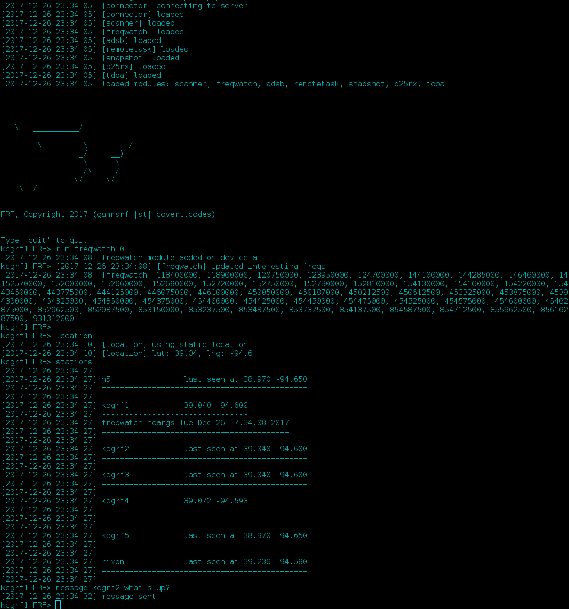

Client¶
This covers the open-source client.
{kind=link}
Installation¶
- git clone https://github.com/gammarf/gammarf
- Adjust gammarf.conf. Get station_id and station_pass from your server administrator
- ./prepare; ./run.sh (assumes you have Docker installed)
- If you’re using HackRF, flash the rom with the newest firmware version. This is a must!
- Make sure all clients are running time synchronization services (ntpd, timesyncd)!
Configuration¶
Below is an example configuration file:
[modules]
modules = scanner, adsb, freqwatch, remotetask, p25rx, snapshot, tdoa, ism433, single
[connector]
station_id = demo
station_pass = demo1234
server_host = gammarf.io
data_port = 9090
cmd_port = 9091
server_web_proto = http
server_web_port = 8080
[startup]
startup_1010 = adsb
startup_9000 = p25rx 50000
startup_virtual = scanner, freqwatch
[location]
usegps = 0
lat = 39.04
lng = -94.6
[scanner]
# squelch (above avg.) for interesting freqs, must be float
hit_db = 15.0
[rtldevs]
rtl_path = /usr/local/bin
gain_1000 = 23
ppm_1000 = 0
offset_1000 = 0
range_1000 = 30 1600
#gain_1001 = 23
ppm_1001 = 0
offset_1001 = 0
range_1001 = 30 1600
gain_1007 = 23
ppm_1007 = 0
offset_1007 = 0
range_1007 = 30 1600
gain_1008 = 23
ppm_1008 = 0
offset_1008 = 0
range_1008 = 30 1600
[hackrfdevs]
hackrf_path = /usr/local/bin
lna_gain = 32
vga_gain = 40
Configuration Sections¶
- [modules]
This section contains a single setting, modules, which is the list of modules to be loaded by the client. It’s alright to leave this alone, even if you don’t plan on using every module.
- [connector]
This section contains information about the station and server. The station ID and password must have already been registered with the server.
- [startup]
Modules can be loaded at client start using this section. The format of entries is:
startup_{device} = {module} {parameters}
Device numbers 9000+ are for pseudo-devices (currently only p25rx). If the device number is instead the string virtual, the module will be assigned to the HackRF, if one is present. Only particular modules are able to run on the HackRF.
For RTL-SDR devices, the device number is the serial number. This can be set with the rtl_eeprom utility.
- [location]
If usegps is set to 0, the lat and lng settings will be used to determine node position. The coordinates should be in decimal degrees. If usegps is 1, then gpsd on the local system will be used to determine the node’s location. You will want to use GPS if your node moves around.
- [scanner]
This section holds scanner module settings.
- [rtldevs]
The rtl_path setting tells the client where the RTL-SDR tools, (such as rtl_power) are installed. gain_{device} defines the gain of device X. ppm_{device} defines the ppm (error) value for device X. offset_{device} assigns a frequency offset (in MHz)to the device. You might set the offset when using an upconverter. Finally, range{device} specifies the frequency range the device supports, minimum and maximum in MHz.
- [hackrfdevs]
Binary path and gain information for HackRF devices.
Usage¶
The client will identify RTL-SDR devices and HackRF. The client can use many RTL-SDRs, but only the first HackRF. Once initialization is complete, you will be presented with a prompt. You can use the below commands. Lines that start with a # are ignored. Tab completion is available.
- devs: Show loaded devices and running modules. Time is UTC
- help: Show available commands
- interesting_add: Add an entry to the station’s ‘interesting’ list
- interesting_del: Remove an entry from the station’s ‘interesting’ list
- interesting: Show the station’s current ‘interesting’ list
- location: Show the location the client currently thinks it is at
- message: Send a messager to another node. If the node is not logged in when the message is sent, the message will be retrieved when it logs in. > message [target] [message]
- mods: List available modules and show their usage information
- now: Show the current date and time, according to the node (UTC)
- pwr: Show power at a frequency (requires HackRF)
- quit: Exit the client
- remotetask: Request a module to be run on another node (the node must be listening for requests of this type)
- reserve: Reserve a device
- run: Run a module. Module arguments can be seen in the module’s section in the output of the mods command
- settings: Show / toggle a module’s settings. Each module may have its own settings. Settings are shown in the output of the mods command, or can be seen by typing settings {module}. Settings are toggled by typing settings {module} {setting-name} {value}. In the case of boolean settings, {value} is omitted
- stop: Stop a job. The device index is used in conjunction with this command, e.g. stop 1. The device will be available for use with another module (or another instance of the same module) after stop has been run on it. For modules that run on the HackRF, the device ‘numbers’ are letters that are reclaimed when the module finishes running.
- unreserve: Unreserve a device that has been reserved with the reserve command
- stations: Show stations associated with the cluster
- tdoa: Request stations to cooperate in a TDOA measurement
Modules¶
A list of currently implemented modules follows. See the output of the mods command for usage instructions.
- adsb: Aircraft telemetry (ADS-B) module. Decodes ADS-B broadcasts sent by aircraft.
- freqwatch: Report the power of each of the station’s ‘interesting’ frequencies periodically.
- p25rx: A pseudo-module that doesn’t do much itself. It accepts output from the trunk-recorder recorder command, piped over a UDP socket and sends summary information to the server.
- remotetask: Accept jobs for a certain type of module from others.
- scanner: This module receives a list of “interesting” frequencies for your node from the server, and monitors their signal levels. It behaves sort of like a handheld radio scanner - it will report frequencies that exceed the squelch (a configurable level above the average at that frequency.) Be careful adjusting this module’s hit_db parameter. If it’s too low, noise will trigger false hits. Particularly noisy frequencies may do that, anyway.
- single: Monitor a single frequency for power above a specified threshold
- snapshot: Take a picture of a swath of the RF spectrum and send it to the server.
- ism433: Collect and send ISM433 (such as Tire Pressure Monitoring System (TPMS) information)
Misc. Considerations¶
USB Bandwidth¶
Use a maximum of four sticks per USB controller. A controller is not the same thing as a port. If you start having problems with device errors, segfaults, or other weird errors, try using less devices per controller. Give the HackRF its own dedicated USB 3.x controller.
Noise¶
Keep your receivers a good distance from your computer and other electronics. Keep your antenna(s) by the window.
GPS¶
gpsd needs to be running and listening on localhost for GPS to work. If you have problems with GPS, see this page.
Ports¶
The following ports are used for communications, and should be opened on the system firewall.
Port Protocol In/Out Bandwidth Use 8090 TCP Out High General I/O - to server only 8091 TCP Both Low Command channel
Hardware¶
Various RTL-SDR vendors exist, and accessories (antennas, amplifiers, filters) are plentiful. Here are some tips for picking the right stuff.
- The metal-cased RTL-USB sticks work pretty well. Look for something with a low PPM.
- It’s critical to have the right antenna for the job. If you are scanning different frequency bands, have antennas that suit each one.
- Sharing an antenna (through a splitter) results in less power being fed to each stick. One antenna to two sticks, half the power. And so on.
- If you keep your antenna next to a window, you’ll see a big increase in power over keeping it far from a window. If you keep it outside the window, even on the outside ledge, you may see a much larger increase.
- For ADS-B, get one of the RTL-SDR dongles specifically made for this (you can find them on Amazon); they include an amplifier and filter. You also definitely need an antenna that covers the ADS-B frequency band.
- Keep your sticks far from generators of EM noise, like your PC and monitor. Use long USB cables if necessary. Clamp on ferrite beads to each end of the USB cables.
- If you use your sticks with a USB hub, make sure the hub is externally powered.